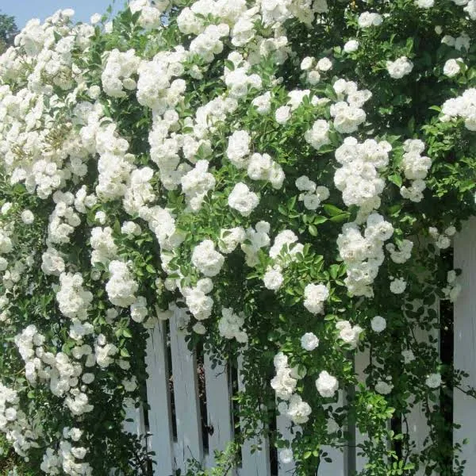
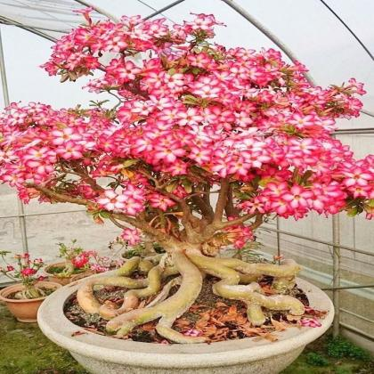
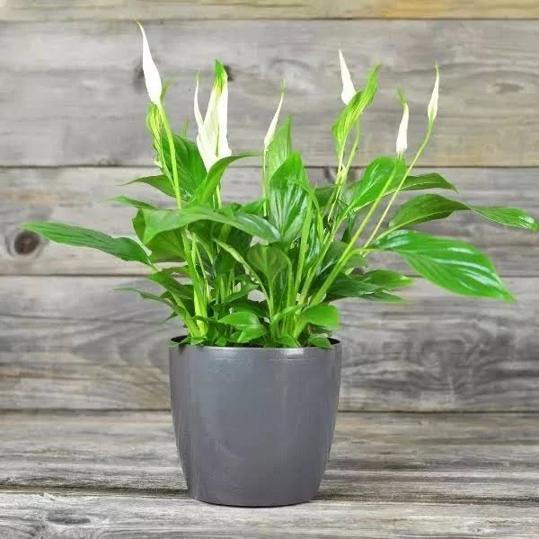
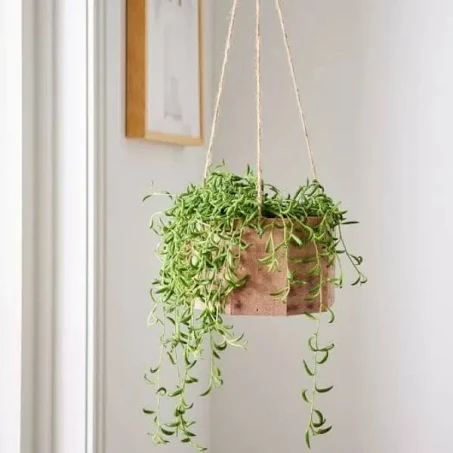
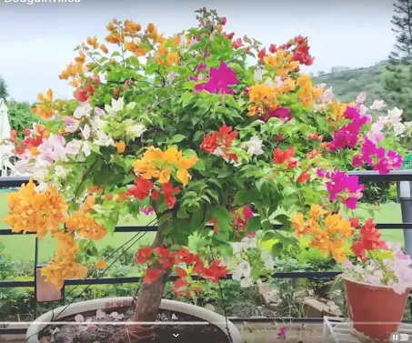

I'm Groot Plant
Give your home a natural look by adding greens! The Syngonium
plant is a natural air purifier andis known to reduce anxiety
and stress by lowering the stress and comforting ...
Rs. 499 only(Free delivery)

Creeper Rose Plant White
Purchase DescriptionCreep Rose PlantProduct Material Natural
Plant With Pot Quantity 1Pot Height 5Inches 13cm Pot Colou
Black PlasticVery easy to maintain and Suitable for ...
Rs. 299 only(Free delivery)

Pink flower boncii plant
Adenium is a genus of flowering plants in the family Apocynaceae
first described as a genus in 1819. It is native to Africa and
the Arabian Peninsula
Rs. 599 only(Free delivery)

Peace Lily Plant Sapling - Indoor - House Plant
The Peace Lily plant is a popular houseplant as it has many
benefits. It is easy to grow and it purifies the air in the
surroundings. This plant will come in a 1-inch net pot ...
Rs. 249 only(Free delivery)

Hanging Plant with flowers
The String of Bananas plant is a fast-growing plant that is
easier to care for. It has banana-shaped leaves and grows
long to hang down from the pot. This plant will come in a ...
Rs. 149 only(Free delivery)

Multicolour flowering plant
Buy this unique plant online in India at lowest price from
Plant Orbit.Laxmi kamal plant is Vastu Plant, Its in house
is believed to bring wealth and prosperity.
Rs. 348 only(Free delivery)